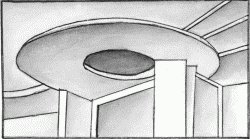
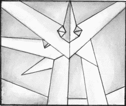
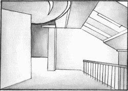

Многоуровневые потолки.

Еще сравнительно недавно ремонт потолков проводился одинаково: сначала недостаточно ровный потолок штукатурили, потом выравнивали с помощью шпатлевки, окрашивали в белый, реже – в светло-голубой или светло-зеленый цвет. Затем появились новые технологии отделки – многоуровневые (или разноуровневые) потолки.
В первое время дизайн таких покрытий оставлял желать лучшего: не хватало специалистов по монтажу; идеи авторов данных потолков были очень оригинальными, однако не всегда подходили для жилых помещений; строительные материалы, используемые для устройства многоуровневых потолков, были далеко не лучшего качества.
Разноуровневые потолки помогают решить многие эстетические и технические проблемы. Наиболее стильные интерьеры создаются без использования верхних уровней.
Потолки с верхним уровнем применяют с тщательной проработкой рисунка в плане и точными расчетами высоты конструкции.
Ранее многоуровневые потолки устраивали в основном в офисах, больницах и т. д.
Во многом распространению потолков данного вида способствовало появление на рынке стройматериалов натяжных потолков и гипсокартона, относительно недорогих и не имеющих ограничений по конфигурациям материалов.
Многоуровневые потолки применяют в следующих случаях:
– для скрытия неровностей и дефектов базового потолка (рис. 11): часто перепады бывают настолько заметными, что замаскировать их иначе практически невозможно;

Рис. 11. Многоуровневый потолок для скрытия дефектов базового покрытия.
– для прикрытия систем кондиционирования, электропроводки, воздуховодов, фреонопроводов, труб водоснабжения, отопления (рис. 12); в этом случае многоуровневый потолок – идеальное решение.

Рис. 12. Многоуровневый потолок для прикрытия технологических элементов.
Многоуровневый потолок помогает также решить проблему низких потолков (рис. 13). Специалисты по интерьеру предпочитают использовать следующий прием: если уровень потолка в прихожей опустить, а в гостиной сохранить прежним, при входе в нее кажется, что пространство будто расправлено. При этом основной уровень потолка в гостиной дополнительно выделяют с помощью подсветки, светлых оттенков потолочных обоев и красок, а также текстурой.

Рис. 13. Создание визуально высокого потолка с помощью многоуровневых потолков.